Phase 1 · storyboard for approval
Each keyframe below is rebuilt in HTML/CSS/SVG (live text, traced map, data from the screens) and shown next to its source PNG. Timings are the planned positions on the master timeline (≈ 34 s loop). Use overlay to onion-skin the source screen over the rebuild.
| Chapter | Label | Start | Keyframes | Card |
|---|---|---|---|---|
| 1 · During the visit | ch1 | 0.0 s | 01a · 01b · 01c | Optional label: "Saved to national EMR · coded" |
| 2 · In real time | ch2 | 8.4 s | 02a · 02b · 02c | Optional label: "Validated by the health worker" |
| 3 · After the visit | ch3 | 15.3 s | 03a · 03b · 03c | No optional label given |
| 4 · Across facilities | ch4 | 23.8 s | 04a · 04b · 04c | Optional label: "Data stays in-country" |
| Loop | end | 33.0 s | crossfade 0.5 s back to 01 | Total ≈ 33.5 s |
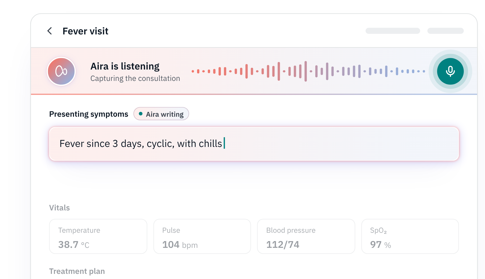
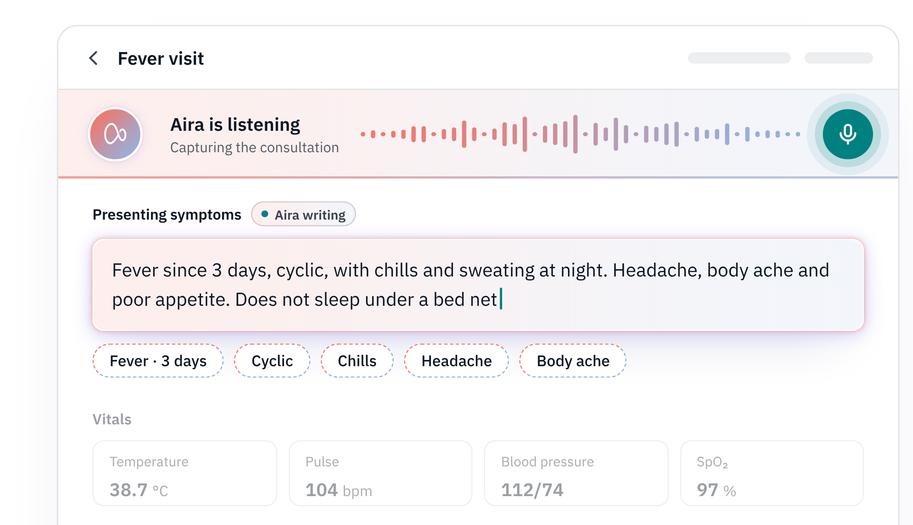
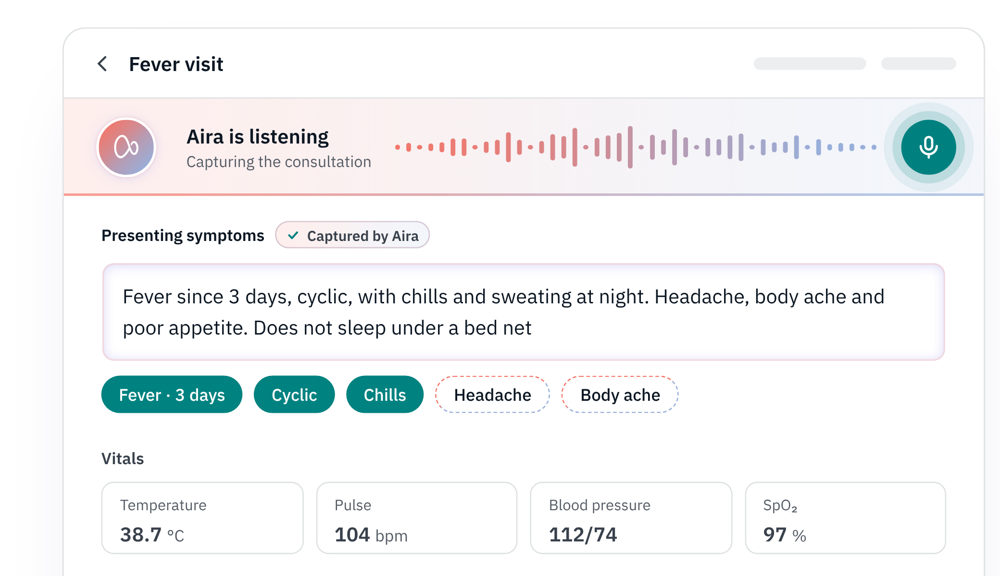
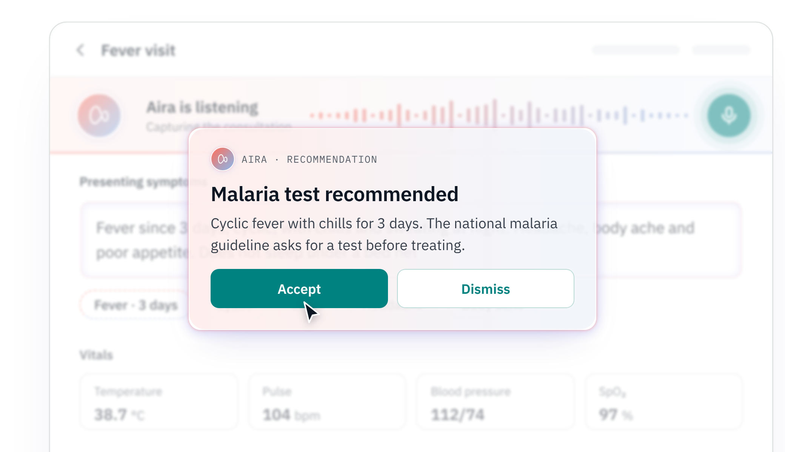
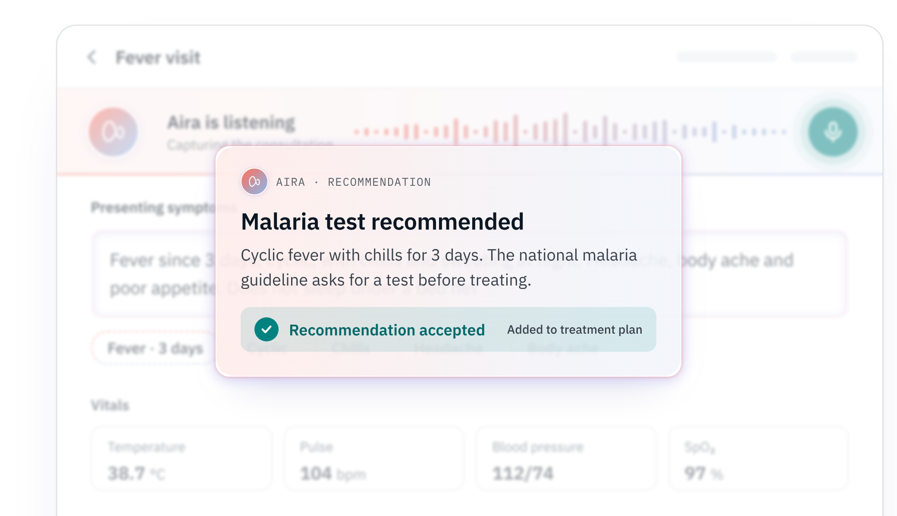
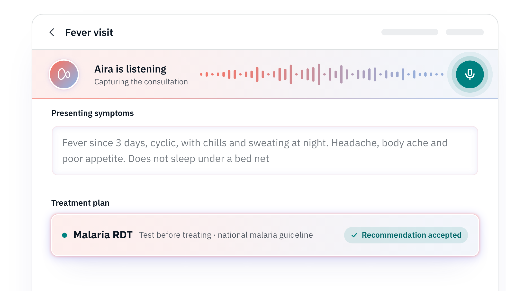
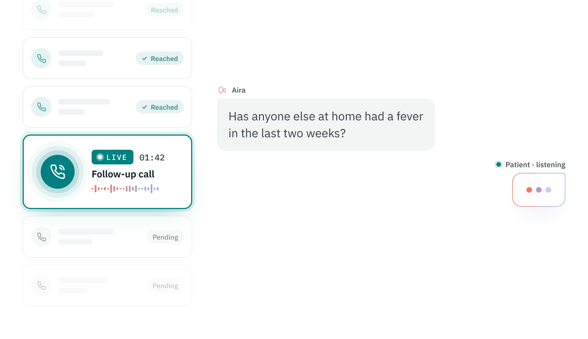
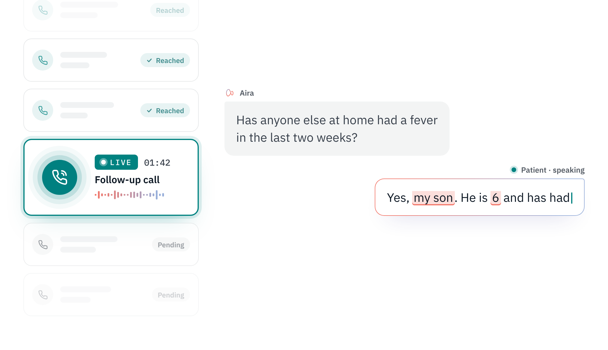
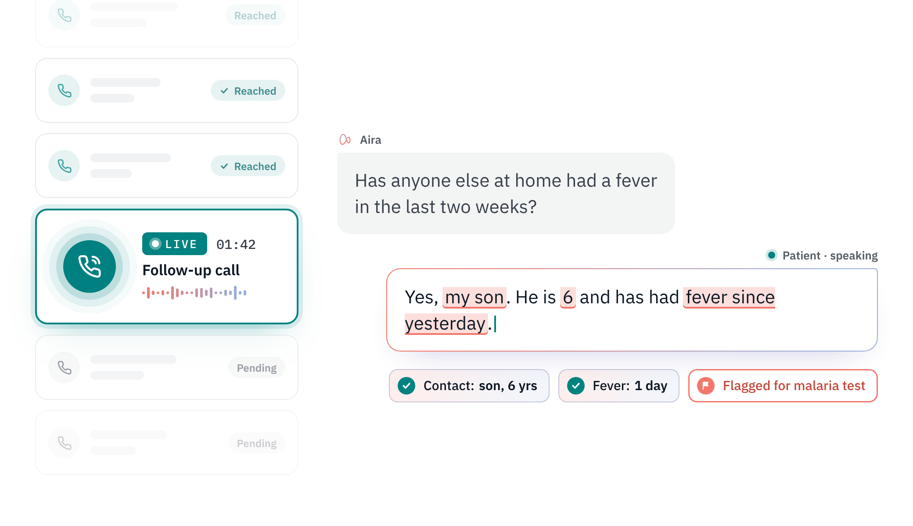
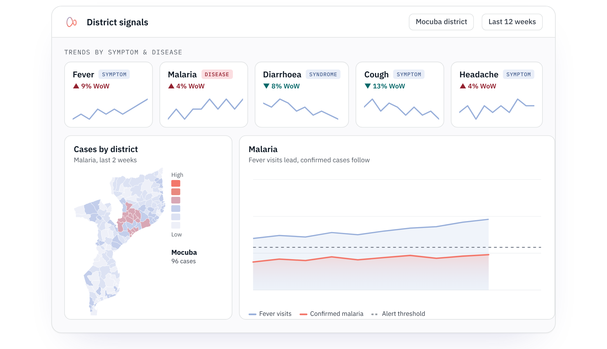
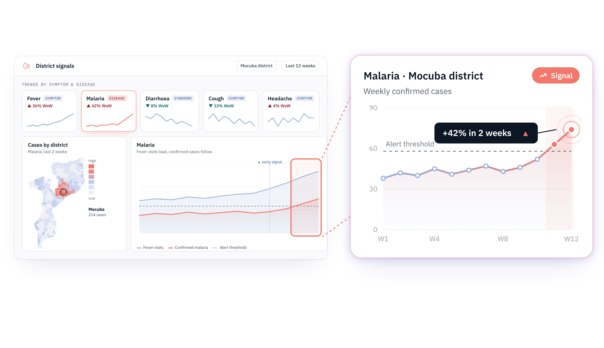
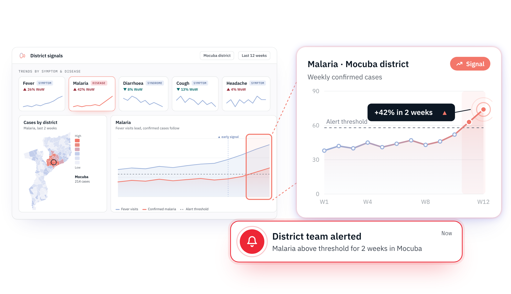